Beautiful historic building with ornate frescoed ceilings. Located in the quieter Oltrarno neighborhood, a 25-minute walk from the Duomo and minutes from Piazzale Michelangelo.
Historic gelateria since 1939. Packaged GF cones available. Staff trained on cross-contamination — uses clean scoop and scoops from under the surface for celiacs.
What to Order
GF cones with any gelato flavor. Also has dairy-free options.
AIC certified with TWO separate kitchens — one dedicated to GF preparation. Dedicated GF fryer and separate oven for GF pizza. No surcharge for GF items.
What to Order
GF pizza, Nutella calzone, arancini, tiramisu — almost everything on menu available GF
Dedicated GF kitchen and fryer. ALL menu items available GF. Owner's wife is celiac. Won World Championship Pizza Gluten Free. Food is flagged with GF stickers.
Florence's historic center is compact and very walkable. Most major attractions within 15-20 minutes of each other.
Best way to see the city
Bus
ATAF buses useful for Piazzale Michelangelo, Fiesole, and areas outside ZTL.
Single ticket 1.50€ / 90 min
Tram
Line T2 connects airport to city center. Line T1 connects Scandicci to SMN station.
Airport to center: Line T2
Taxi
Available at stands or by calling. Not hailable on the street.
8-15€ within center
Transit Tip
Firenze Santa Maria Novella station IS the city center — the Duomo is a 10-minute walk. No transit needed for most sightseeing.
Landmarks & Must-See Spots
14 spots
Cathedral of Santa Maria del Fiore
Historic
Florence's iconic Duomo with its stunning marble facade of pink, white, and green. The cathedral complex includes Giotto's Bell Tower and the Baptistery.
Piazza del Duomo
Went here
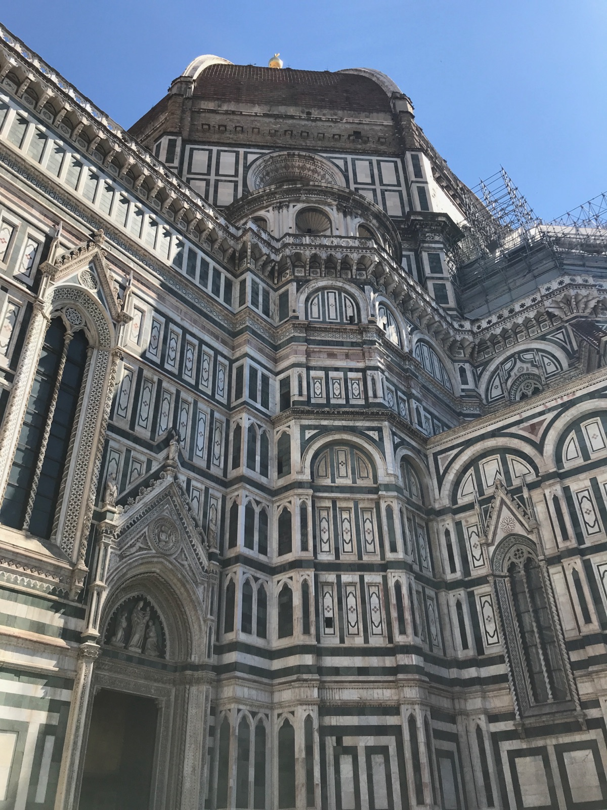
Cupola del Brunelleschi
Historic
Climb 463 steps to the top of Brunelleschi's magnificent dome for panoramic views of Florence and the Tuscan hills.
Piazza del Duomo
Went here
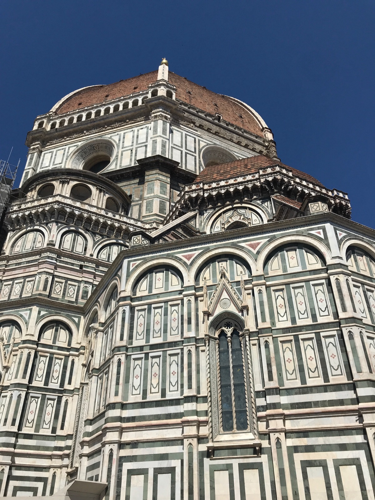
Ponte Vecchio
Historic
Florence's most photographed bridge, lined with jewelry shops. Medieval bridge spanning the Arno River since 1345.
Ponte Vecchio
Went here
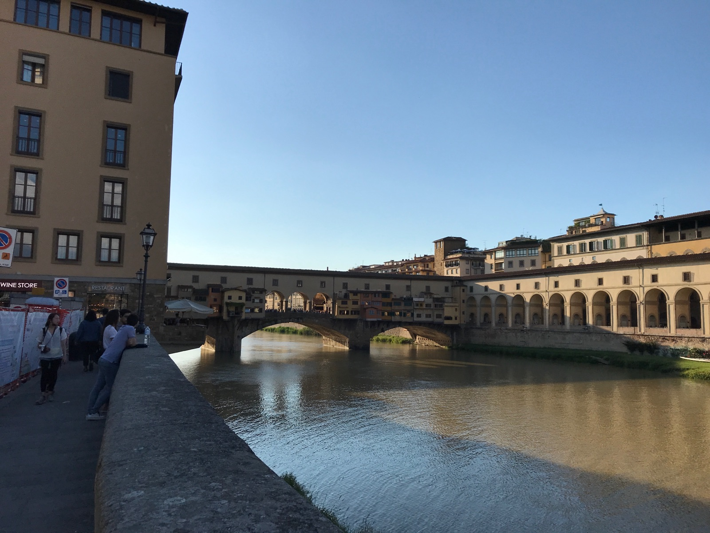
Piazzale Michelangelo
Nature
The classic panoramic viewpoint overlooking Florence. Best at sunset when the city glows golden with the Duomo dominating the skyline.
Piazzale Michelangelo · Oltrarno
Went here
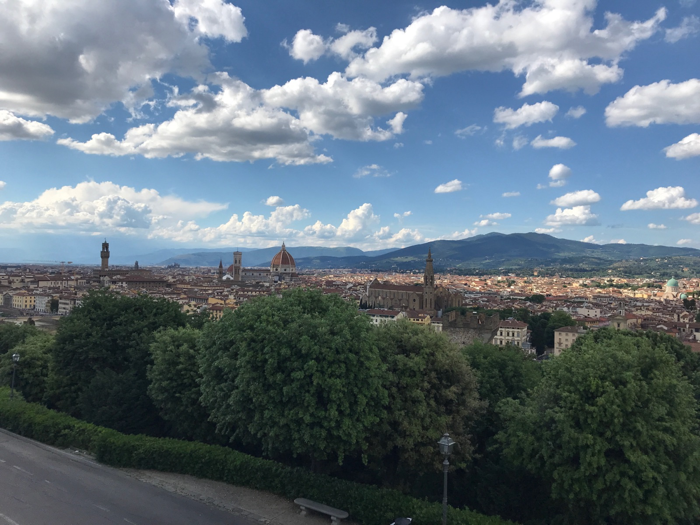
Loggia dei Lanzi
Historic
Open-air sculpture gallery in Piazza della Signoria featuring Renaissance masterpieces including Cellini's Perseus and Giambologna's Rape of the Sabine Women.
Piazza della Signoria
Went here
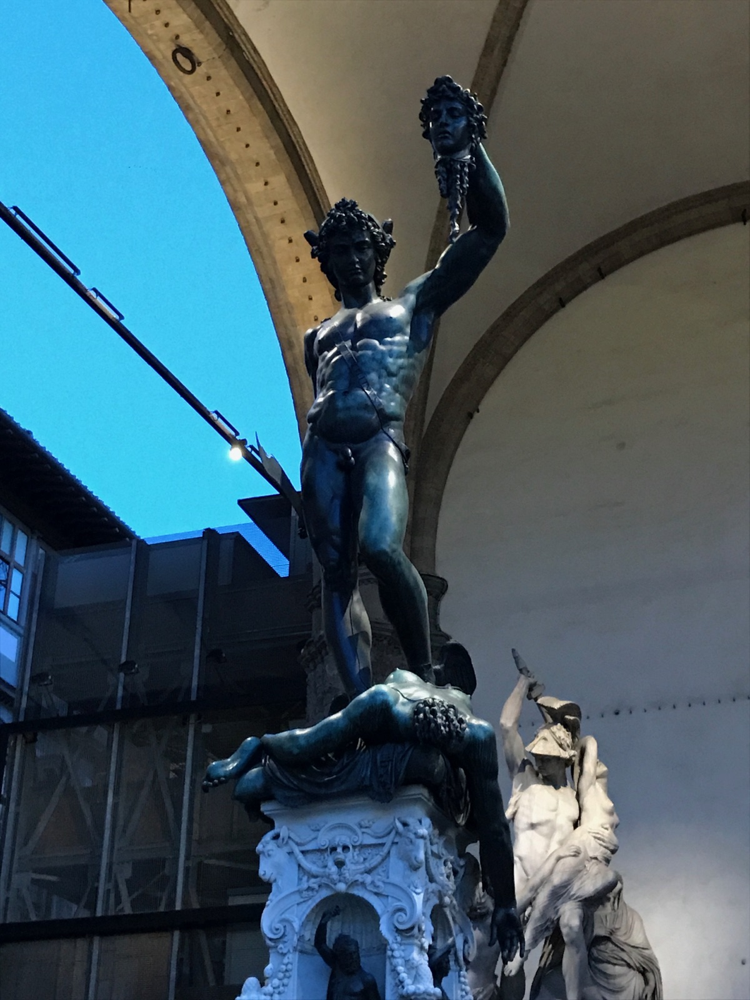
Fountain of Neptune
Historic
Fontana del Nettuno in Piazza della Signoria, with Palazzo Vecchio towering behind. A landmark of Florence's political heart.
Piazza della Signoria
Went here
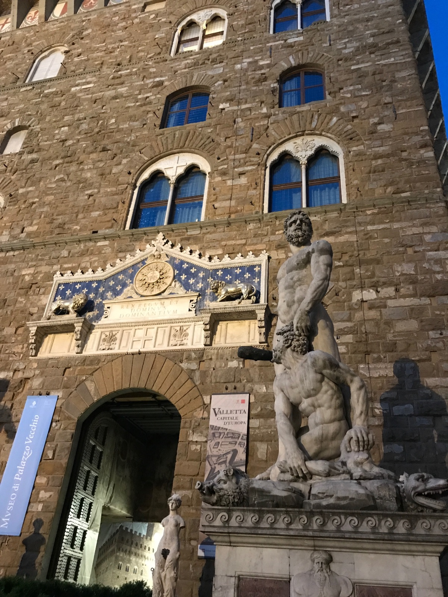
Palazzo Vecchio
Historic
Florence's fortified town hall since 1299. The crenellated tower and ornate interior are iconic symbols of the city.
Piazza della Signoria
Traveler recommended
Basilica of Santa Croce
Historic
The largest Franciscan church in the world, containing the tombs of Michelangelo, Galileo, and Machiavelli.
Piazza di Santa Croce
Went here
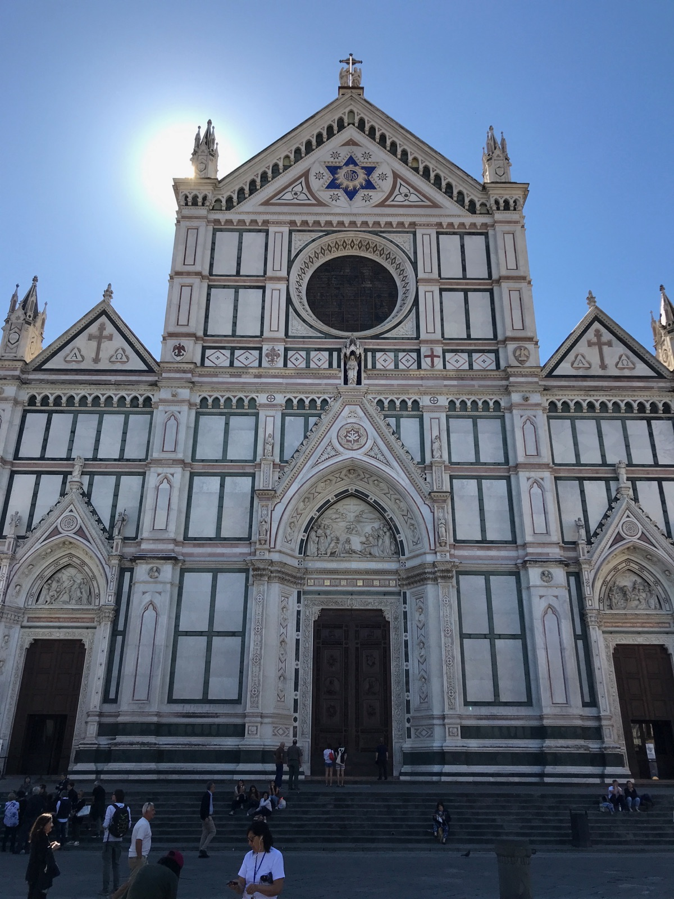
Accademia Gallery
Historic
Home to Michelangelo's David, one of the most recognizable sculptures in the world. Skip-the-line tickets strongly recommended.
Via Ricasoli, 58/60 · San Marco
Went here
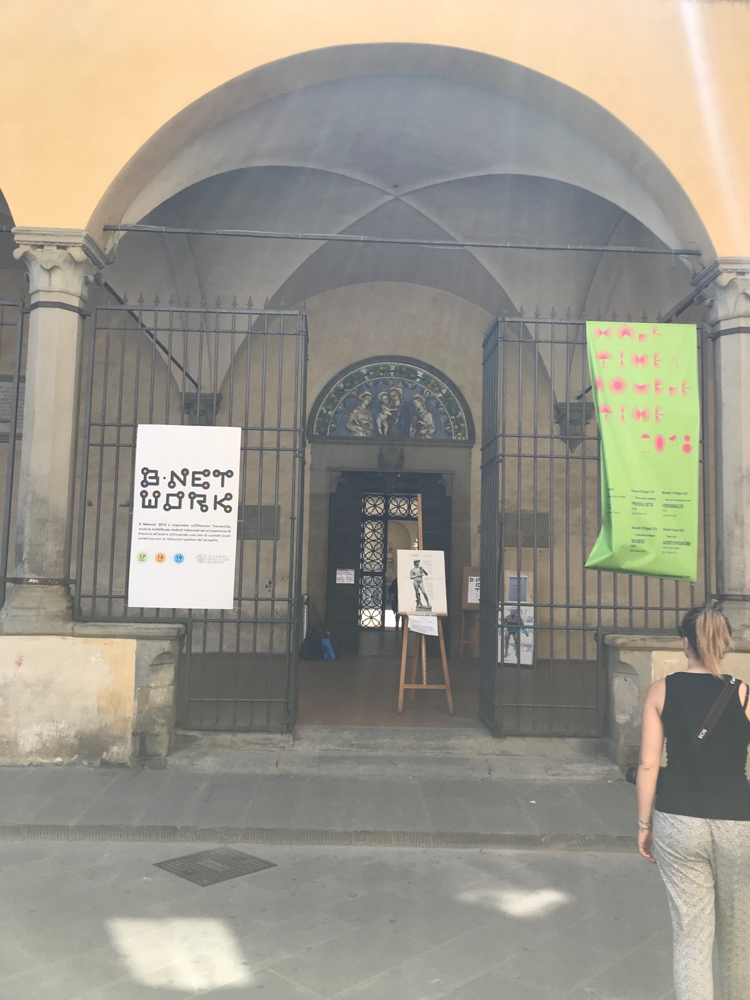
Giardino Bardini
Nature
A hidden garden only recently opened to the public, with terraced grounds, fountains, and stunning views over Florence.
Costa San Giorgio, 2 · Oltrarno
Went here
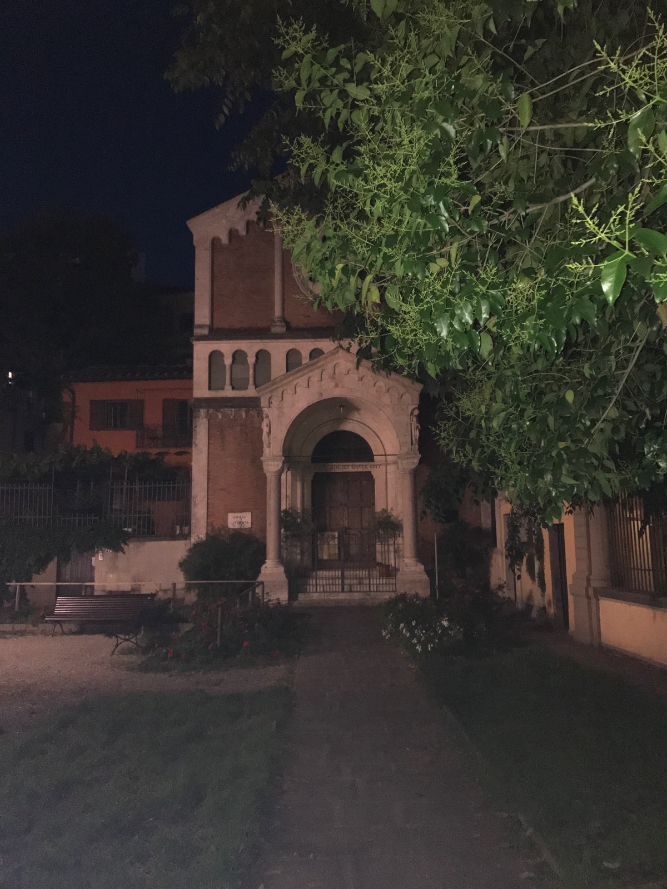
Piazza Santo Spirito
Walk
The social heart of Oltrarno where locals gather. Lined with coffee and wine bars, cheap restaurants, and a younger crowd.
Piazza Santo Spirito · Oltrarno
Went here
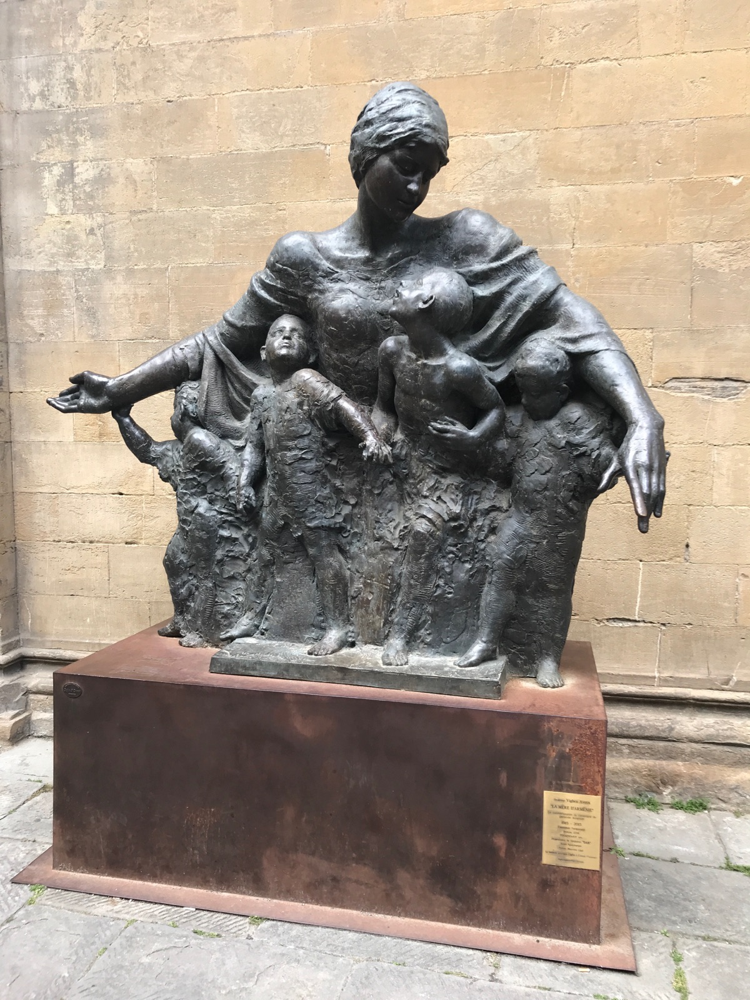
La Loggia del Piazzale Michelangelo
Walk
A charming spot for a cocktail or glass of wine while people-watching, with panoramic terrace views over Florence.
Piazzale Michelangelo · Oltrarno
Went here
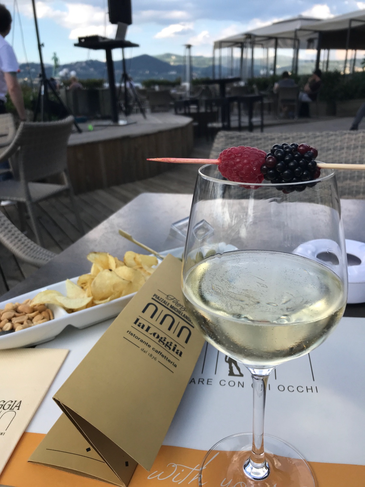
Mercato Centrale
Market
Florence's main food market. Ground floor has fresh produce, meat, and cheese. Upstairs food hall has curated stalls for pasta, pizza, gelato, and wine.
Piazza del Mercato Centrale · San Lorenzo
Went here
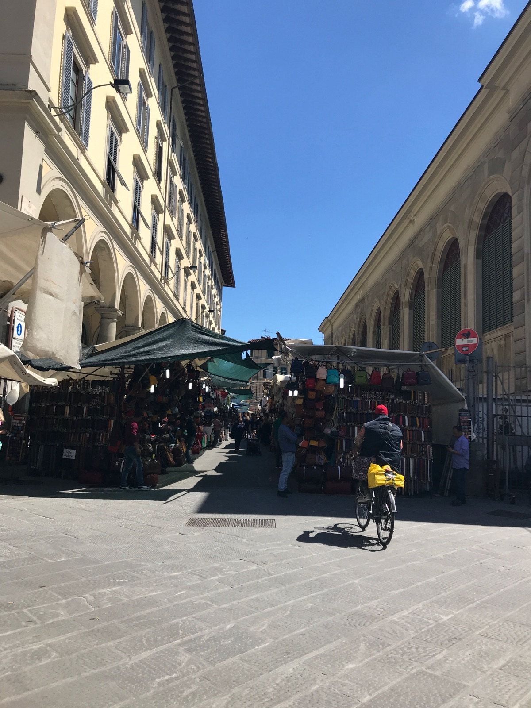
Mercato di Sant'Ambrogio
Market
A real neighborhood food market where locals shop. Much less touristy than Mercato Centrale with fresh produce and local specialties.
Piazza Lorenzo Ghiberti · Santa Croce
Traveler recommended
Neighborhoods
Centro Storico
Monumental
The beating heart of Florence, dominated by the Duomo and Piazza della Signoria. Dense concentration of tourists and monumental architecture. Via de' Calzaiuoli connects the main plazas. Eat a block or two off the main squares for better quality.
Santa Croce
Local & Lively
East of the Duomo, centered on the basilica. Slightly grittier, more local feel with excellent leather workshops, lively aperitivo bars, and the Sant'Ambrogio market nearby.
San Lorenzo
Market District
Defined by the basilica and the sprawling street market. Mercato Centrale anchors the area with its ground-floor produce market and upstairs food hall. Busy and commercial near the market, quieter on residential streets north.
Oltrarno
Artisan Quarter
Cross the Ponte Vecchio into Florence's "Left Bank." Traditional artisan workshops in woodworking, gilding, and bookbinding. Palazzo Pitti and Boboli Gardens anchor the east. Santo Spirito is the social hub. Some of Florence's best, least touristy food.
San Marco
Quiet & Academic
Home to the Accademia Gallery and University of Florence. Piazza Santissima Annunziata is one of the most harmonious Renaissance squares. Fewer restaurants and shops — more residential.
Things to Do
Museums & Galleries
Uffizi Gallery
Paid
One of the world's most important art museums. Houses Botticelli's Birth of Venus, works by Leonardo, Raphael, Caravaggio, and more.
Celiac dining card in ItalianPrinted card explaining celiac disease in Italian. Widely understood in Italy, but useful at smaller establishments.
Essential
Portable phone chargerLong days of walking and photography drain batteries fast
Essential
Reusable water bottleFlorence has free drinking fountains (nasoni) throughout the city
Essential
EU power adapterType C/F/L plugs used in Italy. A universal EU adapter covers all three.
Italy
AIC Mobile appDownload the AIC (Associazione Italiana Celiachia) app to find certified GF restaurants across Italy
Italy
Comfortable walking shoesCobblestone streets and 463 dome steps demand good footwear
Florence
Light layersMay weather is warm (24-26°C) but evenings cool down by the river
Florence
Compact umbrellaSpring showers are possible in May
Florence
Small daypackFor water, snacks, and a light layer during long walking days
Florence
Sunscreen & sunglassesStrong Mediterranean sun, especially at Piazzale Michelangelo
Florence
Travel Tips
Pre-book the Uffizi, Accademia, and Dome climb — lines can be hours long without skip-the-line tickets, especially in May
Italy is one of the best countries in the world for celiacs — mandatory childhood screening, government GF food vouchers, and the AIC certification program make dining remarkably safe
Say "Sono celiaco/a" at every restaurant — Italian staff take this seriously and will guide you to safe options
Bread arrives automatically at every restaurant — say "Niente pane, per favore" immediately, or ask if they have GF bread
Walk everywhere in the historic center — Florence is compact and most attractions are within 15-20 minutes of each other
Visit Piazzale Michelangelo at sunset for the best views — arrive early to claim a spot
Italian pharmacies stock GF bread, pasta, and snacks — look for the green cross sign
The cover charge (coperto) includes bread you can't eat — you still pay it, usually 1.50-3€ per person
What I'd Do Differently
Book a GF pizza dinner at Ciro and Sons — we discovered it after the trip and the owner's wife is celiac. World championship GF pizza!
Spend more time in Oltrarno — the artisan workshops and local food scene south of the Arno deserve a full day
Try the castagnaccio (chestnut flour cake) — a naturally GF Tuscan dessert we missed
Have a tip or comment?
Found a great GF spot in Florence? I'd love to hear from you.